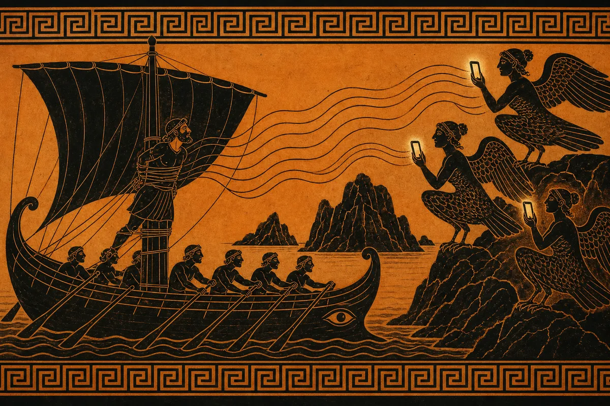
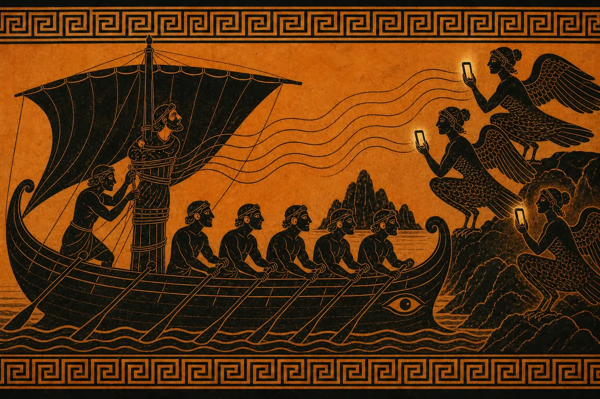
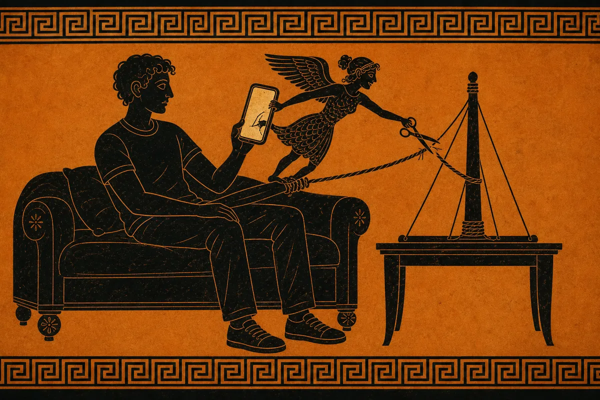
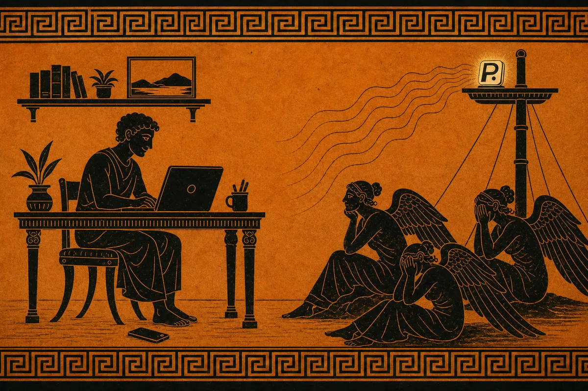

Mock A · Odyssey frieze · B · C
Why Pauzie




Odysseus knew the Sirens' song would sink his ship.
Today the Sirens sing from your pocket. Reels, pings, "just one more".
So he tied himself to the mast before the song began.
He didn't trust his willpower. He made the choice ahead of time.
App blockers tie you up, then hand you the scissors.
The unlock button lives inside the phone. One tap on "Ignore limit" and you're gone.
Pauzie puts the knot across the room.
To open a distracting app, you have to get up and go get it. Most of the time, you won't.
Distance does what willpower can't.